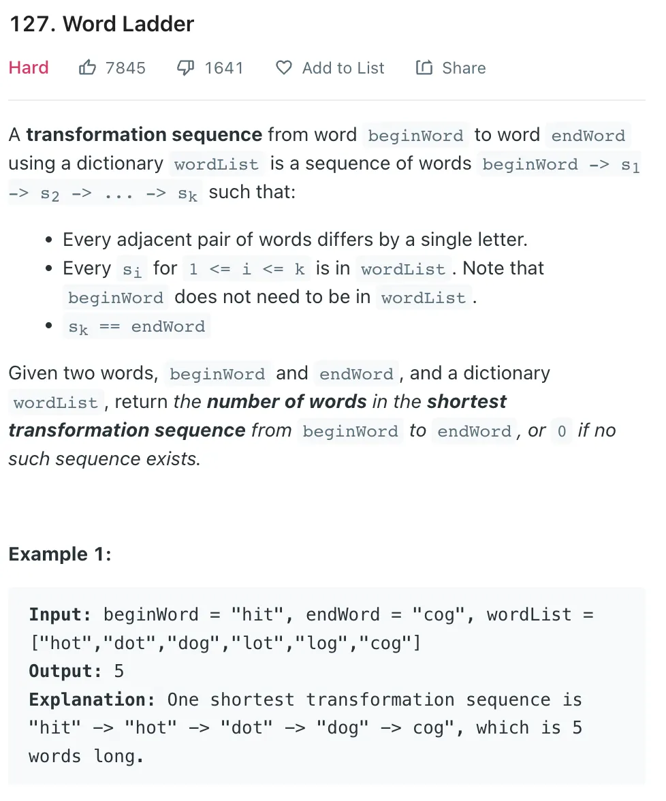
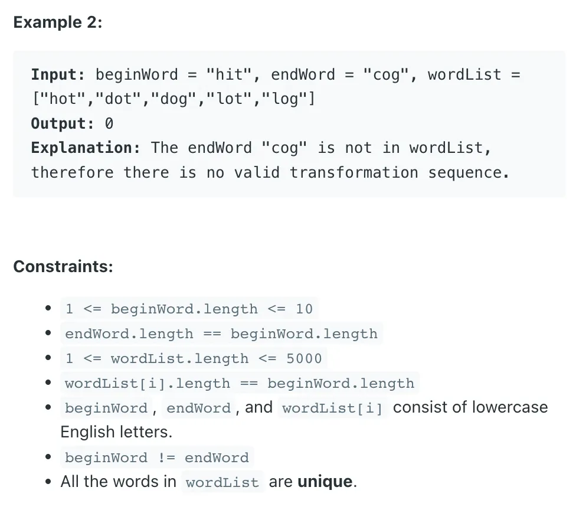

127. Word Ladder
考過的公司：Amazon、Bytedance
Question


✍🏽 My Solution
Runtime: 115 ms, faster than 63.60% of Java online submissions for Word Ladder.
Memory Usage: 94 MB, less than 21.62% of Java online submissions for Word Ladder.
class Solution {
public int ladderLength(String beginWord, String endWord, List<String> wordList) {
Set<String> wordSet = new HashSet<>(wordList);
if (!wordSet.contains(endWord)) {
return 0;
}
Queue<String> queue = new LinkedList<>();
queue.offer(beginWord);
int levelNum = 0;
while(!queue.isEmpty()) {
int curSize = queue.size();
for (int i = 0; i < curSize; i++) {
String word = queue.poll();
if (word.equals(endWord)) {
return levelNum + 1;
}
char[] charArray = word.toCharArray();
for (int j = 0; j < word.length(); j++) {
char origin = charArray[j];
for (char c = 'a'; c <= 'z'; c++) {
charArray[j] = c;
String newString = new String(charArray);
if (wordSet.contains(newString)) {
queue.offer(newString);
wordSet.remove(newString);
}
}
charArray[j] = origin;
}
}
levelNum++;
}
return 0;
}
}
🧠 Thought Process
- Why did I choose this particular implementation?
Solution #1 [雙向BFS]
class Solution {
public int ladderLength(String beginWord, String endWord, List<String> wordList) {
// 第 1 步：先将 wordList 放到哈希表里，便于判断某个单词是否在 wordList 里
Set<String> wordSet = new HashSet<>(wordList);
if (wordSet.size() == 0 || !wordSet.contains(endWord)) {
return 0;
}
// 从两端 BFS 遍历要用的队列
Queue<String> queue1 = new LinkedList<>();
Queue<String> queue2 = new LinkedList<>();
// 两端已经遍历过的节点
Set<String> visited1 = new HashSet<>();
Set<String> visited2 = new HashSet<>();
queue1.offer(beginWord);
queue2.offer(endWord);
visited1.add(beginWord);
visited2.add(endWord);
int count = 0;
while (!queue1.isEmpty() && !queue2.isEmpty()) {
count++;
if (queue1.size() > queue2.size()) {
Queue<String> tmp = queue1;
queue1 = queue2;
queue2 = tmp;
Set<String> t = visited1;
visited1 = visited2;
visited2 = t;
}
int size1 = queue1.size();
while (size1-- > 0) {
String s = queue1.poll();
char[] chars = s.toCharArray();
for (int j = 0; j < s.length(); ++j) {
// 保存第j位的原始字符
char c0 = chars[j];
for (char c = 'a'; c <= 'z'; ++c) {
chars[j] = c;
String newString = new String(chars);
// 已经访问过了，跳过
if (visited1.contains(newString)) {
continue;
}
// 两端遍历相遇，结束遍历，返回 count
if (visited2.contains(newString)) {
return count + 1;
}
// 如果单词在列表中存在，将其添加到队列，并标记为已访问
if (wordSet.contains(newString)) {
queue1.offer(newString);
visited1.add(newString);
}
}
// 恢复第j位的原始字符
chars[j] = c0;
}
}
}
return 0;
}
}
Explanation (in my words)
- How does their solution work?